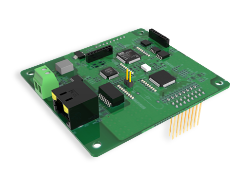
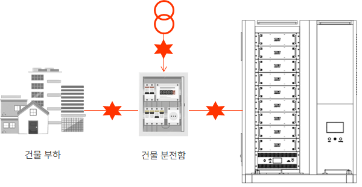

실시간 전압 및 전류의 RMS값, 파형 등을 측정
고조파 성분을 측정하여 기기 오작동 방지
순간적인 전압 강하(Sag), 정전 등 이상 현상을 감지
유효전력, 무효전력, 피상전력, 역률 등을 계산
| 구분 | 단채널 PQM | 다채널 PQM | |
|---|---|---|---|
| 3상 채널 수 | 1 | 2 | |
| 단상 채널 (DC 포함) | 1 | 4 | |
| DI / DO | 2/2 | 4/4 | |
| 측정 전압 | AC 0 – 380V / DC 0 – 300V | ||
| 측정 전류 | 0 – 20A | ||
| 측정 주파수 | 50 – 70Hz | ||
| 정밀도 (sag/swell) | ±0.5% | ||
| THD측정정밀도 | ±0.5% | ||
| 전력품질 | 전압 Dip[Sag/Swell] | IEC61000-4-30, ±0.5% Full scale | |
| 전압/전류 THD | IEC61000-4-7, 63고조파까지 | ||
| 전류 TDD | IEC61000-4-7, 63고조파까지 | ||
| 전압/전류 불평형률 | IEC61000-4-30 NEMA MG1 | ||
| METER | Real Time | Phase Volt, Line Volt, Current, Power, Angle Reactive Power, Power Factor, Loads Feature | |
| Energy | Energy, Reactive energy, Apparent Energy, Demand | ||
| Monitoring | Harmonics | V/I Unbalance, THD, indiviual Harmonics, Current K Factor, Volt Crest Factor | |
| Demand | Current, Power | ||
| Communication | RS232/485, CAN2.0B, Modbus RTU, Ethernet, Wifi/BT | ||

3~100kHz 대역의 노이즈
절연 손상, 접촉 불량으로 인한 고온의 불꽃 방전 현상 감시
전류 파형, 고주파 노이즈 패턴 분석, 절연저항, 누설전류 감시